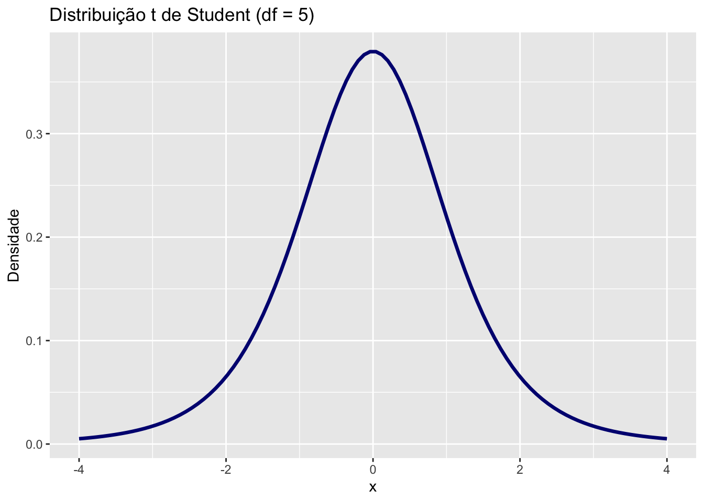

Capítulo 12 Aplicações
12.1 Distribuições Discretas
12.1.1 1. Binomial
Modela o número de sucessos em n tentativas com probabilidade p.
n <- 10
p <- 0.5
x <- 0:n
y <- dbinom(x, size = n, prob = p)
ggplot(data.frame(x, y), aes(x, y)) +
geom_bar(stat = "identity", fill = "steelblue") +
labs(title = "Distribuição Binomial (n = 10, p = 0.5)", x = "Número de Sucessos", y = "Probabilidade")
12.1.2 2. Poisson
Modela o número de eventos raros num intervalo fixo.
lambda <- 3
x <- 0:15
y <- dpois(x, lambda)
ggplot(data.frame(x, y), aes(x, y)) +
geom_bar(stat = "identity", fill = "darkorange") +
labs(title = "Distribuição de Poisson (λ = 3)", x = "Número de Eventos", y = "Probabilidade")
12.1.3 3. Geométrica
Modela o número de falhas antes do primeiro sucesso.
p <- 0.3
x <- 0:10
y <- dgeom(x, prob = p)
ggplot(data.frame(x, y), aes(x, y)) +
geom_bar(stat = "identity", fill = "purple") +
labs(title = "Distribuição Geométrica (p = 0.3)", x = "Tentativas até o 1º Sucesso", y = "Probabilidade")
12.2 Distribuições Contínuas
12.2.1 1. Normal
Modela fenômenos naturais e erros de medida.
x <- seq(-4, 4, length.out = 100)
y <- dnorm(x)
ggplot(data.frame(x, y), aes(x, y)) +
geom_line(color = "darkgreen", size = 1.2) +
labs(title = "Distribuição Normal (média = 0, sd = 1)", x = "x", y = "Densidade")## Warning: Using `size` aesthetic for lines was deprecated in ggplot2 3.4.0.
## ℹ Please use `linewidth` instead.
## This warning is displayed once every 8 hours.
## Call `lifecycle::last_lifecycle_warnings()` to see where this warning was
## generated.
12.2.2 2. Exponencial
Tempo até um evento ocorrer.
lambda <- 1
x <- seq(0, 5, length.out = 100)
y <- dexp(x, rate = lambda)
ggplot(data.frame(x, y), aes(x, y)) +
geom_line(color = "firebrick", size = 1.2) +
labs(title = "Distribuição Exponencial (λ = 1)", x = "Tempo", y = "Densidade")
12.2.3 3. Uniforme Contínua
Todos os valores têm a mesma chance.
x <- seq(0, 1, length.out = 100)
y <- dunif(x, min = 0, max = 1)
ggplot(data.frame(x, y), aes(x, y)) +
geom_line(color = "goldenrod", size = 1.2) +
labs(title = "Distribuição Uniforme Contínua (0 a 1)", x = "x", y = "Densidade")
12.2.4 4. t de Student
Usada em testes com amostras pequenas.
x <- seq(-4, 4, length.out = 100)
y <- dt(x, df = 5)
ggplot(data.frame(x, y), aes(x, y)) +
geom_line(color = "navy", size = 1.2) +
labs(title = "Distribuição t de Student (df = 5)", x = "x", y = "Densidade")